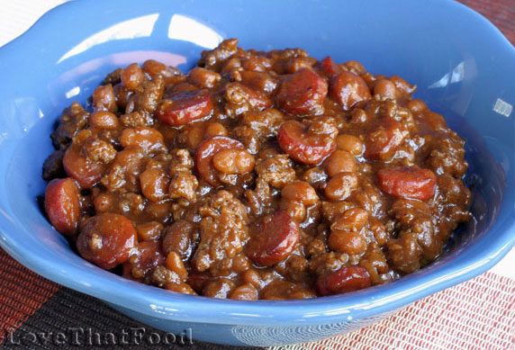

Beanie Weenies

Description
For those days where you don't want to break your back in the kitchen for an enjoyable meal. A delicious and quick dinner that the whole family can enjoy.
Ingredients
- 1(28 ounce) can baked beans with pork
- 1(16 ounce) package hot dogs, cut into 1/4 inch slices
- 2/3 cup Ketchup
- 1/4 cup Worcestershire Sauce
- 2 tablespoons cider vinegar
- 1 tablespoon chopped fresh parsley
- 1 1/2 teaspoons garlic powder
Steps
- Combine baked beans, hot dogs, ketchup, Worcestershire sauce, cider vinegar, parsley, and garlic powder in a large skillet. Mix to blend.
- Bring to a boil. Turn heat to low, cover the skillet, and simmer for 25 to 30 minutes, stirring occasionally.